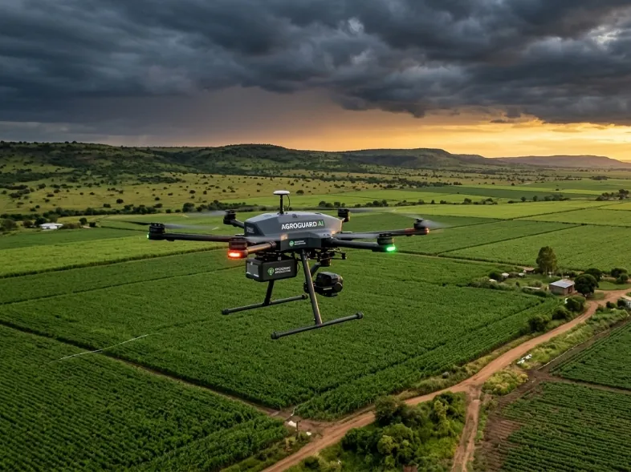
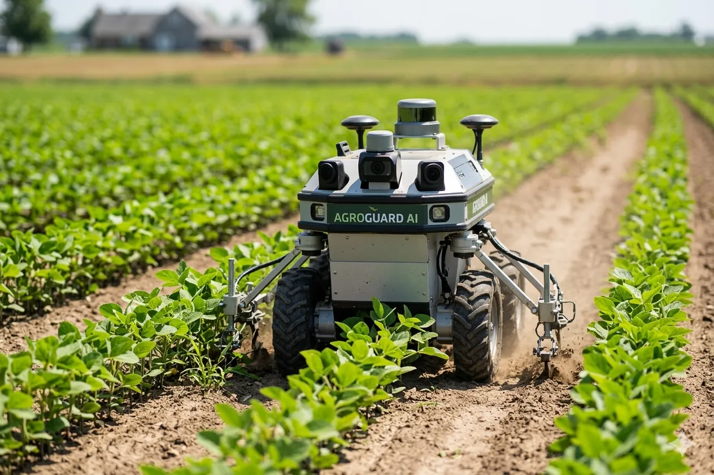

Autonomous drones and rovers that execute AI-driven field operations with centimeter-level precision. From targeted crop spraying to soil analysis, our hardware brings intelligence to life in your fields.
Deploy enterprise-grade scout drones and ground rovers seamlessly integrated with the AgroGuard Intelligence layer. Actionable insights instantly translate into automated field execution.
Purpose-built autonomous systems for different field operations and farm scales.

Autonomous aerial scout for field monitoring. Captures high-resolution multispectral imagery. Identifies disease hotspots, pest activity, and yield variations in real time.
AI-guided spray drone for targeted crop treatment. Reduces chemical use by up to 80% versus blanket applications. Centimeter-level accuracy for disease and pest control.

Ground-based autonomous rover for soil sampling and analysis. Collects soil data across your fields. Maps nutrient levels, pH, and moisture content for precision fertilization.
Every robot is guided by AgroGuard Intelligence, making autonomous decisions in real time.
GPS-guided flight and ground navigation. Obstacle avoidance. Works in challenging terrain and weather conditions.
On-board AI processes sensor data instantly. Adjusts treatment plans based on field conditions without human input.
Centimeter-level accuracy for spray delivery. Reduces chemical waste and environmental impact. Optimizes treatment effectiveness.
RGB, multispectral, thermal, and LiDAR sensors. Comprehensive field data collection for analysis and decision-making.
Manage multiple robots from a single dashboard. Coordinate operations across your farms. Track performance and ROI in real time.
Operates in rain, wind, and variable lighting. Adaptive algorithms adjust for environmental conditions. Safe and reliable in real-world farming.
From disease management to yield optimization, AgroRobotics handles it all.
Target disease hotspots and pest-infested areas with exact dosages. Reduce chemical use by 80%. Lower input costs and environmental impact.
Create detailed soil nutrient maps. Identify variability across fields. Apply fertilizers only where needed.
Continuous field surveillance. Detect problems early before they spread. Real-time alerts for disease outbreaks or pest activity.
Collect data throughout the growing season. Predict yields 90+ days in advance. Plan harvesting and market timing.
Schedule a demo to see AgroRobotics in action. We'll show you how autonomous field operations can transform your farm.